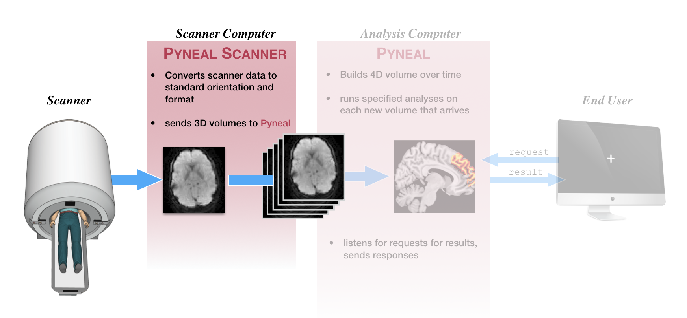

Pyneal Scanner¶

First step, make sure you've followed the instructions at setup: Pyneal Scanner to configure Pyneal Scanner to your environment.
Basic Usage¶
To launch Pyneal Scanner from the scanner computer, open the command line and navigate to the pyneal_scanner directory. From the pyneal_scanner directory, type:
python pynealScanner.py
If you have set up Pyneal Scanner correctly, you will see a print out of your settings, info about any existing series directories in the scannerBaseDir path, and a message that Pyneal Scanner is attempting to connect to Pyneal over the specified pynealSocket:
===============
SCANNER SETTINGS:
pynealSocketHost: 127.0.0.1
pynealSocketPort: 5555
scannerBaseDir: /path/to/scanner/baseDir
scannerMake: GE
============
Session Dir:
/path/to/scanner/baseDir/p1/e666
Series Dirs:
s1923 23.6 MB 5 min, 13 s ago
s1925 26.2 MB 1 min, 10 s ago
MainThread - Connecting to pynealSocket...
Once you launch Pyneal on the analysis computer, you will see a confirmation that Pyneal Scanner has connected to Pyneal, and is now waiting for new data to arrive from the scanner:
MainThread - pynealSocket connected
MainThread - Waiting for new seriesDir...
How it works¶
Behind the scenes, Pyneal Scanner is running two separate threads. One thread is dedicated to monitoring the specifed directory for new data to appear. Whenever new data arrives, it places it in a queue. The 2nd thread is responsible for pulling data off of that queue, preprocessing it to convert to a standardized format, and then sending the reformatted data to Pyneal over a socket connection (defined by pynealSocketHost and pynealSocketPort in the configuration file).
Depending on which type of scanner you are using, the directory structure for where new data will appear, and the format that it will appear in, can differ drastically. Pyneal Scanner comes with utilities designed to handle the directory structures and formats of 3 different scanner manufacturers: GE, Philips, and Siemens.
Directory structures and data formats by scanner make¶
Pyneal Scanner is designed to handle the standard data formats used across the 3 dominant scanner manufacturers, GE, Philips, and Siemens. This section will provide details on the directory structures and data formats across each in order to help make sure you configure Pyneal Scanner correctly.
GE¶
-
expected data format: dicom files, one file per slice. Each dicom file must contain the following tags:
ColumnsImagesInAcquisitionImageOrientationPatientImagePositionPatientInStackPositionNumberInstanceNumberMRAcquisitionTypeNumberOfTemporalPositionsPixelSpacingRowsSliceThickness
-
expected directory structure: new dicom files are written to a directory on the scanner console. The path to that directory can be broken apart as:
-
[scannerBaseDir]/[sessionDir]/[seriesDir], where[scannerBaseDir]: path that remains constant across all scans[sessionDir]: directories that can change from session to session, named likep###/e###where the specific#values are unknown in advance.[seriesDir]: series specific directory named likes###where the specific#values are unknown in advance. Each new scan during a given exam session will be assigned a uniques###dir.
To figure out the
sessionDirandseriesDirfor the current scan session, see the listSeries command below.
-
Philips¶
-
expected data format: new PAR/REC file pairs, where each file pair represents a 3D volume.
-
expected directory structure: Philips scanners have the option to export reconstructed PAR/REC files to a remote directory. The path to that directory can be broken apart as
-
[scannerBaseDir]/[seriesDir], where-
[scannerBaseDir]: path to remote directory that remains constant across all scans -
[seriesDir]: series specific directory named like0###, where the directory name is a 4-character number (zero padded as necessary) that increases sequentially with each new series. There is a unique series directory for each scan.
-
-
Siemens¶
-
expected data format: dicom mosaic files, where each file represents all slices from a 3D volume, arranged in mosaic format. File names are expected to follow a pattern like
###_######_######.dcm, where the 2nd field represents the series number, and the 3rd field represents the volume number. -
expected directory structure: Siemens scanners have the option to export reconstructed dicom mosaic files to a remote directory. The path to that directory can be refered to as
[scannerBaseDir]
The
[scannerBaseDir]will contain all of the volume files for all series in a given scan session.
Sending data to Pyneal¶
During a scan, Pyneal Scanner will automatically send data to Pyneal over a socket connection (defined by pynealSocketHost and pynealSocketPort in the configuration file).
Regardless of how the data is formatted coming off of the scanner (see Directory structures and data formats by scanner make above), Pyneal Scanner will convert everything to a standardized format before sending to Pyneal.
Specifically, Pyneal Scanner will send data as 3D volumes. Each transmission actually takes place in 2 waves:
-
First, a JSON header that contains metadata about the current volume, including fields for:
volIdx- volume index (0-based) of the current volumedtype- datatype of the volume arrayshape- dimensions of the volume arrayaffine- affine transformation that will convert the volume array to RAS+ orientation (see Image Orientation for more info)
-
Second, the data array for the current volume.
Pyneal will use information in the header message to rebuild the volume array, and carry out all subsequent preprocessing and analysis steps.